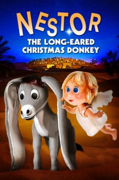

Country:United States, 25 minutes
Spoken languages:English
Genres:Animation, Family, Drama
Director(s):Jules Bass, Arthur Rankin Jr.
Writer(s):Romeo Muller
Video Codec:Unknown
Number: 6880

Certification:G
Storyline:
Nestor the donkey is a bit of an oddity--his long ears are enough for six donkeys and stretch all the way to the ground. One night, when Nestor is locked out in the cold, he begins to wander the desert.
Cast:
Roger Miller (voice of Speiltoe / Narrator), Eric Stern (voice of Nestor), Paul Frees (voice of Santa Claus / Olaf / Donkey Dealer), Brenda Vaccaro (voice of Tilly), Linda Gary (voice of Nestor's Mother)
Medium: Media file,
Location: D:\Complete Rankin Bass Christmas\Nestor, The Long-Eared Christmas Donkey.mp4
Loaned: No
Aspect ratio: Unknown